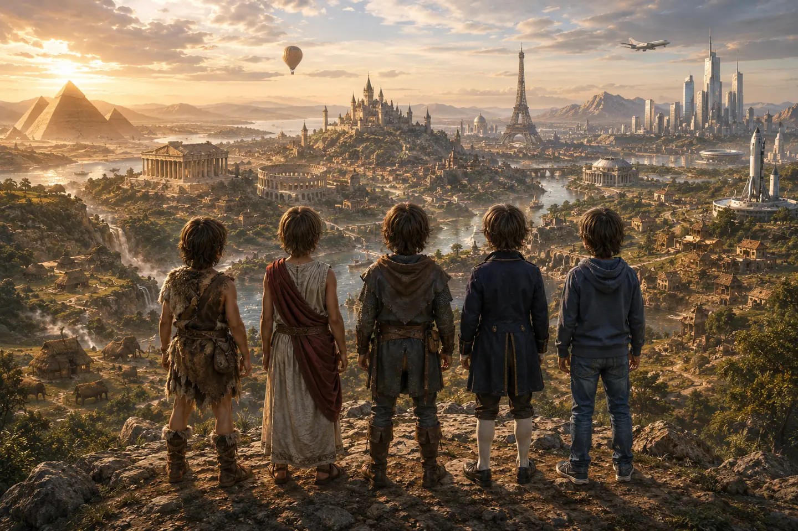
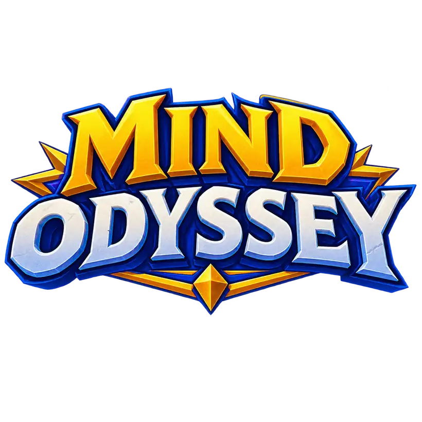
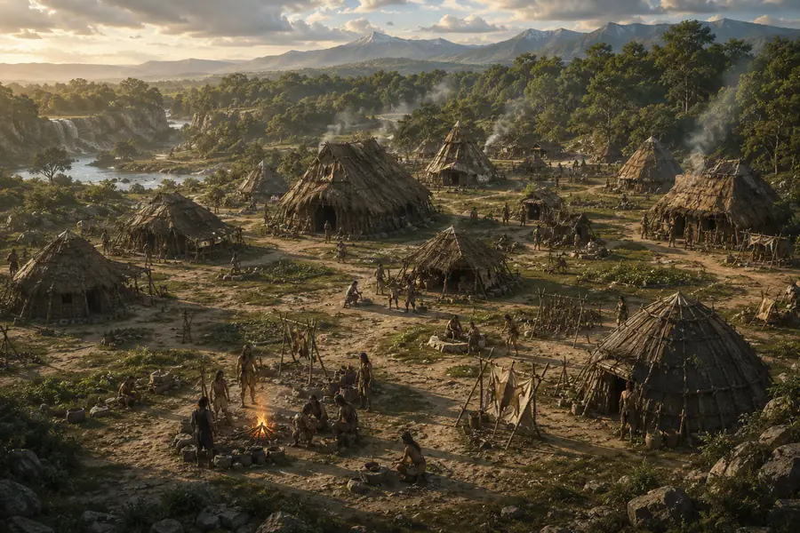

Jeu vidéo d'aventure éducatif pour les 7-12 ans

Une grande aventure à travers l'Histoire,
où apprendre permet d'aller plus loin.
Un court formulaire. Un seul message lorsque la bêta sera prête.
- À partir de 7 ans
- De la Préhistoire à 2026
- Sans publicité
- Sources vérifiées
Les mondes
Dix mondes pour traverser cinq grandes périodes.
L'aventure commence dans un village préhistorique. À mesure qu'il progresse, votre enfant débloque des villages inspirés de l'Antiquité, du Moyen Âge, des Temps modernes et de l'époque contemporaine.
- Monde 1Préhistoirejusqu'à ≈ −3300
Les premiers humains et les premières techniques.
- Mondes 2 et 3Antiquité≈ −3300 à 476
Les premières civilisations, la Grèce, la Gaule et Rome.
- Mondes 4 et 5Moyen Âge476 à 1492
De Clovis aux villes, châteaux et cathédrales.
- Mondes 6 et 7Temps modernes1492 à 1789
La Renaissance, l'imprimerie, les explorations, Versailles et les Lumières.
- Mondes 8, 9 et 10Époque contemporaine1789 à 2026
De la Révolution française à l'âge de l'information, jusqu'en 2026.
Voir les dix mondes et leurs époques
- 1Préhistoiredes premiers humains à ≈ −3300des premiers humains à ≈ −3300
- 2Premières civilisations≈ −3300 à −500≈ −3300 à −500
- 3Grèce, Gaule et Rome≈ −500 à 476≈ −500 à 476
- 4Clovis, Charlemagne et Vikings476 à ≈ 1000476 à ≈ 1000
- 5Châteaux, villes et cathédrales≈ 1000 à 1492≈ 1000 à 1492
- 6Renaissance, imprimerie et ouverture atlantique1492 à ≈ 16001492 à ≈ 1600
- 7Rois, Versailles et Lumières≈ 1600 à 1789≈ 1600 à 1789
- 8Révolution, République et XIXᵉ siècle1789 à 19141789 à 1914
- 9Guerres mondiales, reconstruction et Europe1914 à 19911914 à 1991
- 10L'âge de l'informationthématique · ≈ 1830 à 2026thématique · ≈ 1830 à 2026
Les missions sont construites à partir de sources historiques, scientifiques et pédagogiques vérifiées. Les illustrations donnent vie aux époques sans se présenter comme des reconstitutions documentaires.
Les apprentissages
À l'école, ce sont des notions. Dans le jeu, ce sont des moyens d'avancer.
Lire une consigne, calculer une quantité, comparer deux témoignages, comprendre un mécanisme ou choisir une solution : chaque mission mobilise des connaissances dans une situation concrète.
MindOdyssey ne remplace ni l'école ni l'accompagnement d'un adulte. Il offre un nouvel espace pour comprendre, pratiquer et réutiliser des connaissances.
Les principaux domaines
- Mathématiques
- Informatique
- Histoire
- Enseignement moral et civique
- Science
- Français
- Écologie
- Géographie
- Technologie
- Agriculture
- Arts plastiques
- Histoire des arts
- Langues vivantes
- Éducation musicale
Les missions font appel à des notions du CE1 à la 6ᵉ. Le niveau peut être adapté séparément dans chaque domaine afin de proposer un défi cohérent avec les connaissances de l'enfant.
Pour les parents
Pour eux, c'est une aventure. Pour vous, un cadre clair.
MindOdyssey est conçu pour que les enfants puissent jouer, apprendre et explorer dans un environnement qui respecte leur vie privée et limite les interactions et mécanismes commerciaux inutiles.
Aucune publicité.
Aucun chat avec des inconnus.
Aucun classement entre enfants.
Aucun achat déclenchable par l'enfant.
Aucun prénom réel ni date de naissance demandés.
Aucun traceur publicitaire.
Protection des mineurs dès la conception
Une approche fondée sur les principes du RGPD, les recommandations de la CNIL et les bonnes pratiques européennes de protection des enfants en ligne.
MindOdyssey est en développement
Le premier village ouvrira bientôt ses portes.
Inscrivez-vous pour être prévenu lorsqu'une version du jeu sera prête à être testée par les premières familles.
Soyez parmi les premiers testeurs de MindOdyssey.
Pas de newsletter. Pas de relance. Un seul message lorsque la bêta sera prête.
Inscrivez-vous pour tester la bêta.
Un court formulaire suffit. Nous vous prévenons quand une version du jeu sera prête à être essayée.
Votre adresse ne sera ni vendue, ni transmise, ni utilisée à d'autres fins. Elle sert uniquement à vous prévenir, puis est supprimée. Pour toute demande, écrivez à mindodysseystudio@gmail.com.

Le village, au premier jourLa Préhistoire : il y reste jusqu'à débloquer l'époque suivante.
Comment ça marche
Un village, des missions, un nouveau monde à débloquer.
Chaque monde prend la forme d'un village inspiré d'une période de l'Histoire. Ses bâtiments correspondent aux différents domaines d'apprentissage et abritent les personnages qui proposent les missions.
Votre enfant commence dans un village de la Préhistoire. Les personnages lui confient des missions à accomplir. En progressant, il débloque de nouveaux villages et avance d'époque en époque, jusqu'en 2026.